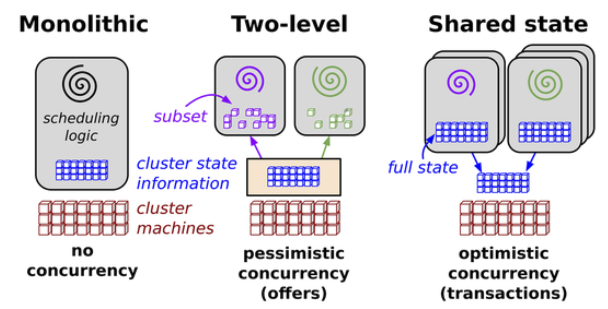
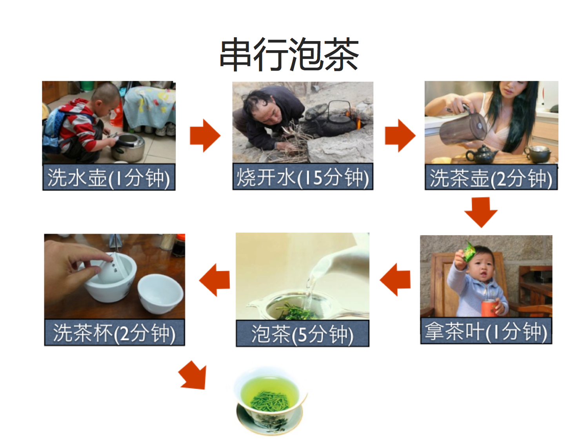
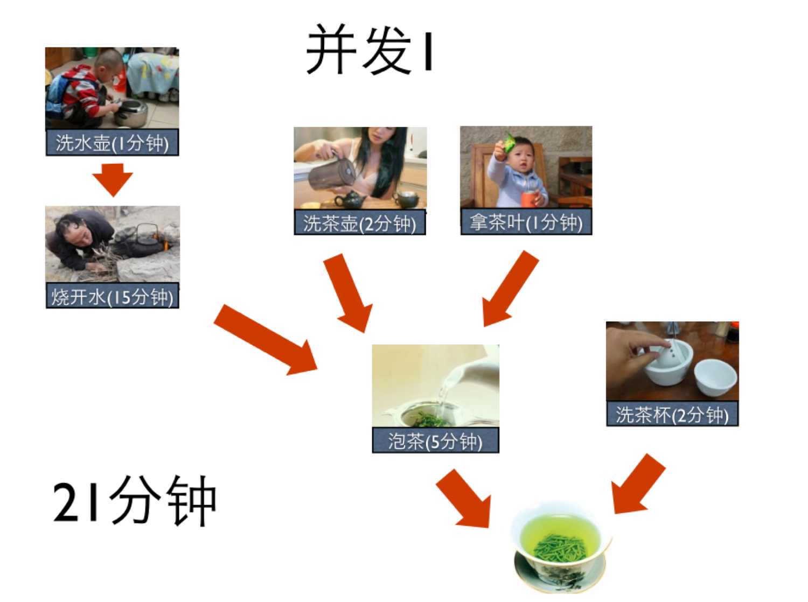
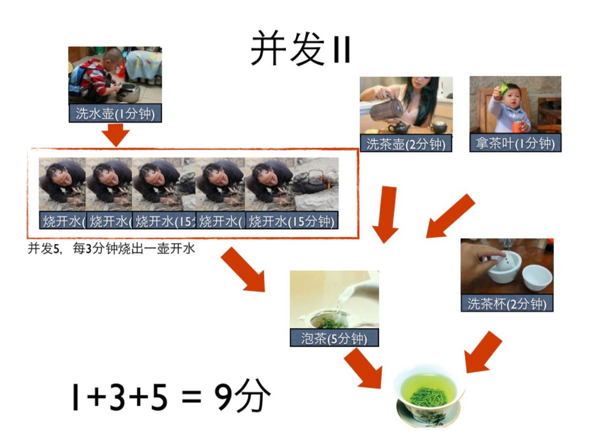

并发¶
乐观的并发控制（optimistic concurrency control）:
在关系数据库管理系统里，乐观并发控制（又名“乐观锁”，Optimistic Concurrency Control，缩写“OCC”）是一种并发控制的方法。 它假设多用户并发的事务在处理时不会彼此互相影响，各事务能够在不产生锁的情况下处理各自影响的那部分数据。 在提交数据更新之前，每个事务会先检查在该事务读取数据后，有没有其他事务又修改了该数据。 如果其他事务有更新的话，正在提交的事务会进行回滚。 乐观事务控制最早是由孔祥重（H.T.Kung）教授提出。 乐观并发控制多数用于数据争用不大、冲突较少的环境中，这种环境中，偶尔回滚事务的成本会低于读取数据时锁定数据的成本， 因此可以获得比其他并发控制方法更高的吞吐量。 在乐观并发控制中，用户读取数据时不锁定数据。 当一个用户更新数据时，系统将进行检查，查看该用户读取数据后其他用户是否又更改了该数据。 如果其他用户更新了数据，将产生一个错误。一般情况下，收到错误信息的用户将回滚事务并重新开始。 这种方法之所以称为乐观并发控制，是由于它主要在以下环境中使用：数据争用不大且偶尔回滚事务的成本低于读取数据时锁定数据的成本。 乐观并发控制将事务分为三个阶段：读取阶段、校验阶段以及写入阶段。 在读取阶段，事务将数据写入本地缓冲（如上所述，A和B将文件都获取到自己的机器上），此时不会有任何校验操作； 在校验阶段，系统会对所有的事务进行同步校验（比如在A或者B打算，但还没有，往SCC上写入更改后的文件时）； 在写入阶段，数据将被最终提交。在完成读取阶段以后，系统会对每个事务分派一个时间戳。
悲观并发(pessimistic concurrency):
一个锁定系统，可以阻止用户以影响其他用户的方式修改数据。
如果用户执行的操作导致应用了某个锁，只有这个锁的所有者释放该锁，其他用户才能执行与该锁冲突的操作。
之所以称为悲观并发控制，是因为它主要用于数据争用激烈的环境中，以及发生并发冲突时用锁保护数据的成本低于回滚事务的成本的环境中。

并发大于并行，包含并行


